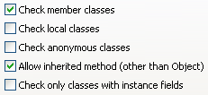
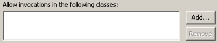
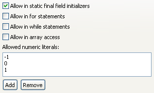

Audit - Rules - MiscellaneousDescriptionThis group contains audit rules that don't fit into any of the other audit rule groups. |
| Rules: |
Summary
Every class should override toString().
Description
This audit rule identifies non-abstract classes that do not override the toString method. It ignores classes that cannot be instantiated, and can be configured to ignore other common situations, such as classes that inherit an implementation from a superclass other than Object.
Example
The following class would be flagged as needing an implementation of toString():
public class StringHolder
{
private String value;
public StringHolder(String initialValue)
{
value = initialValue;
}
public String getValue()
{
return value;
}
}

Summary
Outdated interfaces should not be implemented. Instead, implement the ones that superseded them
Description
This audit rule flags classes that implement outdated interface, or extend outdated abstract classes.
Example
The following would be flagged because Iterator could be implemented instead:
public class Foo extends Enumeration{}
Summary
Member classes should be defined as static classes when possible.
Description
This rule identifies member classes that are not defined as static classes but that could possibly be defined as such.
Summary
Classes which define an iterator() method should implement Iterable.
Description
This audit rule checks for classes which define an iterator() method,but do not implement the Iterable interface. Implementing this interface allows the class to be used in an enhanced for loop. In these cases, it takes no extra effort to implement Iterable.
Example
The following class declaration would be flagged as a violation:
public class Foo
{
public Iterator iterator() {...}
}
Summary
The value of a DBC tag must have valid syntax.
Description
This audit rule checks the value of all DBC tags (@pre, @post, @inv, and @invariant) to ensure that they have a valid syntax. The value must be either a valid Java expression or two valid Java expressions enclosed in parentheses and separated by a comma.
Example
The following precondition would be flagged as a violation because its value is not a valid Java expression:
@pre 0 <= value <= 255
Summary
The methods System.exit(int), Runtime.exit(int), and Runtime.halt(int) should not be invoked.
Description
This audit rule checks for invocations of either of the exit methods, System.exit(int) and Runtime.exit(int), or Runtime.halt(int).
Example
The following invocation would be flagged as a violation:
System.exit(0);

Summary
Numeric literals should not appear in code.
Description
This audit rule checks for numeric literals within the code that are not included in a user-defined list of acceptable literal values. The list initially contains only the values "-1", "0", and "1".
Example int answer = 42;

Summary
Use interfaces to define types, not as places to store constants.
Description
This rule identifies interfaces that do not define any methods. Interfaces that do not define any fields are ignored.
Summary
The class java.util.Random is not as secure as java.security.SecureRandom.
Description
This audit rule looks for any use of the class java.util.Random, including any classes declared as a subclass of Random, and any instances of Random being instantiated. The class java.security.SecureRandom should be used instead.
Security Implications
By using a cryptographically strong random number generated by SecureRandom, any risks that may be caused by a malicious user being able to anticipate the outcome of a random number, will be prevented.
Example
The following would be flagged as a violation:
class A extends Random {}